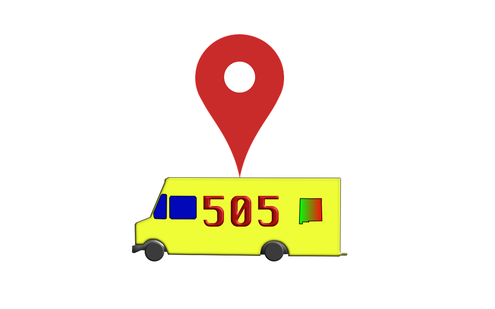

<header>

	<nav class="navbar navbar-expand-lg navbar-dark border-bottom bg-dark fixed-top p-2"
		  id="navigation-bar">
		<a class="navbar-brand text-secondary pl-3" href="#">
			<!--todo replace our logo with FTF-logo-small.png-->
			
		</a>
		<button class="navbar-toggler hidden-sm-up" type="button" (click)="isCollapsed = !isCollapsed"
				  data-target="#navbarsDefault" aria-controls="navbarsDefault" aria-expanded="false"
				  aria-label="Toggle Navigation">
			<span class="navbar-toggler-icon"></span>
			<span class="icon-bar top-bar"></span>
			<span class="icon-bar middle-bar"></span>
			<span class="icon-bar bottom-bar"></span>
		</button>

		<!-- <span href="home-view.php" class="navbar-brand text-center ml-3 name">FoodTruck Finder</span>  -->

		<div [ngbCollapse]="isCollapsed" class="collapse navbar-collapse" id="navbarsDefault">
			<span class="ml-auto">
			<ul class="navbar-nav ">
				<li class="nav-item">
					<a class="nav-link text-warning" routerLink='foodTrucks'>FoodTruck Profiles</a>
				</li>
				<li class="nav-item">
					<a class="nav-link text-warning" href="https://bootcamp-coders.cnm.edu/~dsanderson3/capstone/static-ui/about.php">About Us</a>
				</li>
				<li class="nav-item">
					<a class="nav-link text-warning display-5" routerLink='sign-up'>Sign up</a>
				</li>
				<li class="nav-item">
					<!--<sign-in></sign-in>-->
					<a class="nav-link text-warning" routerLink='sign-in'>Sign In</a>
				</li>
				<!--TODO Make it so sign in/out conditionally render on whether you are logged in or not-->
				<!--<li class="nav-item">-->
					<!--<a routerLink="" class="nav-link text-warning" (click)="signOut();">Sign Out</a>-->
				<!--</li>-->
			</ul>
				</span>
		</div>

	</nav>


</header>